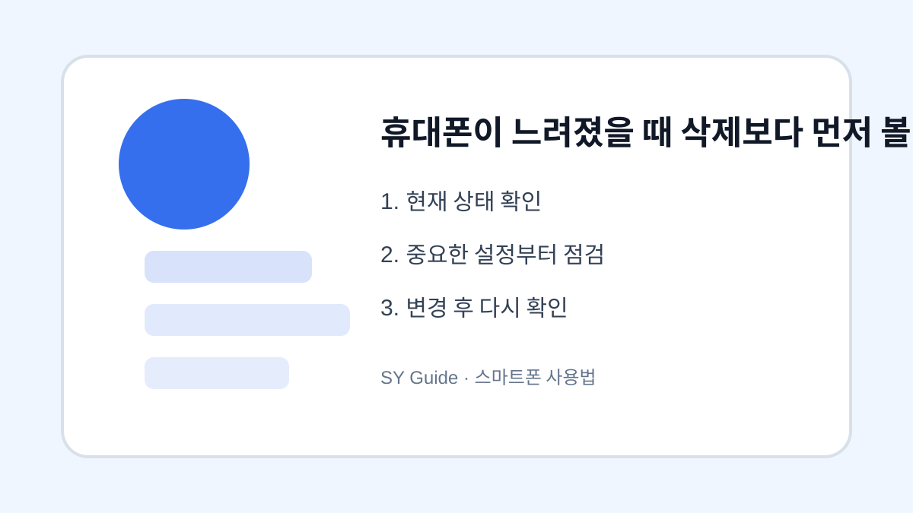

휴대폰이 느려졌을 때 삭제보다 먼저 볼 설정
휴대폰이 느려졌을 때 앱을 무작정 지우기 전에 저장공간, 재부팅, 업데이트, 백그라운드 실행을 확인합니다.

휴대폰이 느려지면 가장 먼저 앱을 삭제하려고 하지만, 원인이 저장공간 부족인지 백그라운드 실행인지 업데이트 문제인지부터 확인하는 것이 좋습니다. 원인을 모른 채 삭제하면 필요한 앱만 사라지고 속도는 크게 달라지지 않을 수 있습니다.
저장공간 여유 확인
저장공간이 거의 가득 차면 사진 저장, 앱 실행, 업데이트가 느려질 수 있습니다. 설정에서 남은 공간을 확인하고 동영상, 다운로드 폴더, 메신저 파일처럼 큰 항목부터 정리합니다. 여유 공간을 확보한 뒤 재부팅하면 체감이 달라질 수 있습니다.
백그라운드 앱과 업데이트
사용하지 않는 앱이 뒤에서 계속 실행되면 속도가 느려질 수 있습니다. 배터리 사용량과 앱 권한을 확인하고 필요 없는 자동 실행을 줄입니다. 운영체제 업데이트가 오래 밀려 있어도 오류가 남을 수 있으니 업데이트 상태도 확인합니다.
| 점검 항목 | 효과 | 주의점 |
|---|---|---|
| 재부팅 | 임시 오류 정리 | 반복 문제는 추가 확인 |
| 저장공간 | 속도 개선 가능 | 백업 후 삭제 |
| 업데이트 | 오류 수정 | 배터리 충분히 |
설정을 바꾸기 전 마지막 확인
- 먼저 재부팅해보기
- 저장공간 여유 확보하기
- 최근 설치 앱 확인하기
- 백그라운드 실행 제한하기
- 업데이트 후에도 느리면 서비스 점검 고려하기
속도 문제는 작은 설정들이 겹쳐 생기는 경우가 많습니다. 삭제보다 점검 순서를 먼저 잡으면 자료를 지키면서도 원인을 찾기 쉽습니다.
예를 들어 사진 앱은 정상인데 메신저만 늦게 열리면 전체 성능 문제가 아니라 특정 대화방의 미디어 파일이나 앱 캐시가 원인일 수 있습니다. 이런 경우 전체 초기화보다 해당 앱의 저장공간과 업데이트 상태를 먼저 확인하는 것이 효율적입니다.
휴대폰이 느려졌을 때 실제 점검 상황
휴대폰이 느려졌다고 바로 사진과 앱을 지우기보다 저장공간, 재부팅, 오래된 앱, 백그라운드 실행을 먼저 확인해야 합니다. 원인을 나눠 보면 초기화 없이도 체감 속도를 회복할 수 있습니다.
느린 휴대폰을 정리할 때 흔한 실수
필수 앱을 지우거나 최적화 앱을 여러 개 설치하면 오히려 알림과 권한이 늘어날 수 있습니다. 최근 설치 앱과 용량 큰 앱을 먼저 확인하고, 삭제 전 백업 여부를 확인하는 것이 좋습니다.
느린 휴대폰을 정리하기 전 먼저 확인해야 하는 이유
휴대폰이 느릴 때 바로 초기화하거나 앱을 대량 삭제하면 필요한 자료까지 잃을 수 있습니다. 저장공간 여유, 최근 설치 앱, 재부팅 여부, 백그라운드 실행 앱을 먼저 보면 원인을 더 좁혀 볼 수 있습니다.
느린 휴대폰을 정리할 때 자주 생기는 실수
최적화 앱을 여러 개 설치하거나 필수 앱 데이터를 지우면 오히려 알림과 권한 문제가 늘어날 수 있습니다. 삭제 전에는 사진과 대화 백업을 확인하고, 사용하지 않는 앱부터 하나씩 정리하는 편이 안전합니다.
속도 점검 후 다시 볼 부분
정리 후에는 자주 쓰는 앱의 실행 속도와 배터리 사용량을 하루 정도 지켜보는 것이 좋습니다. 같은 문제가 반복되면 저장공간보다 배터리 노후, 운영체제 업데이트, 특정 앱 오류가 원인일 수 있습니다.